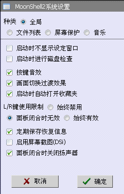
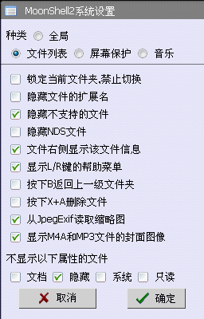
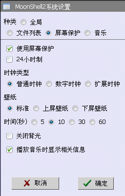
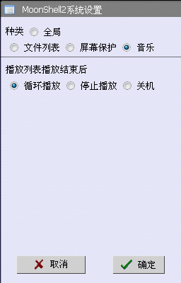
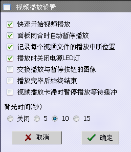
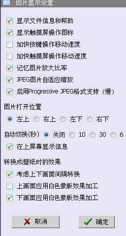
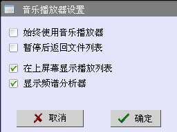
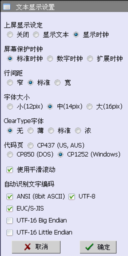

・启动时不显示设定窗口
・启动时进行磁盘检查
没有特别理由的时候请别避开检查
为安全起见、推荐经常检查。
・按键音效
・画面切换过渡效果
・启动时自动打开收藏夹
启动自制软件收藏夹，以方便使用MoonShell2启动自制软件。
・L/R键使用限制
始终禁用, 面板闭合时无效,始终有效
・定期保存恢复信息
此恢复信息记录音乐，图片，文本最后打开时的状态。
・启用屏幕截图(DSi)
DSi需要使用到SELECT键来改变亮度。需要使用屏幕截图功能时请检查这个选项。
・面板闭合时关闭扬声器
耳机输出一直有效、可以防止放在口袋时勿拔出耳机插头时扬声器发出声音。

・锁定当前文件夹，禁止切换
・隐藏文件的扩展名
・隐藏不支持的文件
不显示AVI和EXE等不支持的文件。
WMA和JPG等支持的格式（可以显示在文件列表菜单）也可能因为内部格式不支持而不能打开。
・隐藏NDS文件
・文件右侧显示该文件信息
MP3,JPG,BMP,PSD,DPG 等显示文件信息（播放时长，分辨率等）。
・显示L/R键的帮助菜单
长按L/R键显示帮助信息菜单。
・按下B返回上一级文件夹
默认设置为关闭音乐。
此功能有效时，可以使用R键连按三次关闭音乐。
・按下X+A删除文件
切换START键的删除对话框显示的确认按键。默认为L+R+A键删除。
・从JpegExif读取缩略图
・显示M4A和MP3文件的封面图像
・不显示以下属性的文件
文档, 隐藏, 系统, 只读

・使用屏幕保护
・24小时制
・时钟类型
普通时钟, 数字时钟, 扩展时钟
・壁纸
标准, 上屏壁纸, 下屏壁纸
・时间(秒)
5, 10, 30, 60
・关闭背光
・播放音乐时显示相关信息

・播放列表播放结束后
循环播放, 停止播放, 关机

・快速开始视频播放
加速开始检查、高质量的DPG文件可能会导致丢帧。
・面板闭合时自动暂停播放
・记录每个视频文件的播放中断位置
・播放时关闭电源LED灯
・交换播放与暂停按钮的图像
切换看到的图标。对于功能没有影响。
・播放完毕后始终结束
无视播放模式（顺序播放、循环播放等）始终在播放完成后退回主界面。
・视频播放卡滞时暂停播放等待缓冲
・背光关闭时间(秒)
Off, 5, 10, 15

・显示文件信息和帮助
・显示触摸屏操作图标
・加快按键操作移动速度
・加快触摸屏操作移动速度
・记忆图片放大比率
・JPEG图片自适应缩放
・启用Progressive JPEG格式支持（慢）
Progressive Jpeg格式文件解码十分缓慢、读取途中无法取消读取。
・图片打开位置
左上, 右上, 左下, 右下
・自动切换（秒）
Off, 10, 30, 60
・在上屏幕显示信息
・转换成壁纸时的效果
浏览图片时按下START键将图片转换为壁纸的设定选项。
・考虑上下画面间隔转换
・上画面应用白色蒙版效果加工
・下画面应用白色蒙版效果加工

・始终使用音乐播放器
文件列表菜单下按下A键播放音乐的同时打开音乐播放器。
・暂停后返回文件列表
・在上屏幕显示播放列表
・显示频谱分析器
播放高负荷的格式（MIDI，WMA）时计算频谱数据会导致声音播放不正常。

・上屏显示设定
关闭, 显示文本, 显示时钟
・屏幕保护时钟
标准时钟, 数字时钟, 扩展时钟
・行间距
窄, 标准,宽
・字体大小
小(12pix), 中(14pix), 大(16pix)
・ClearType字体
无, 薄, 标准, 浓
老版DS和DSL中间批次的NDS无法正常显示。
尚未确认DSi是否有此问题。
象素格式的调整不正确、文字变得模糊不清。
・代码页
CP437 (US, AUS), CP850 (DOS), CP1252 (Windows)
这里是使用ANSI编码时的选项。
・使用平滑滚动
・自动识别文字编码
请选择你想自动识别的文本格式 。